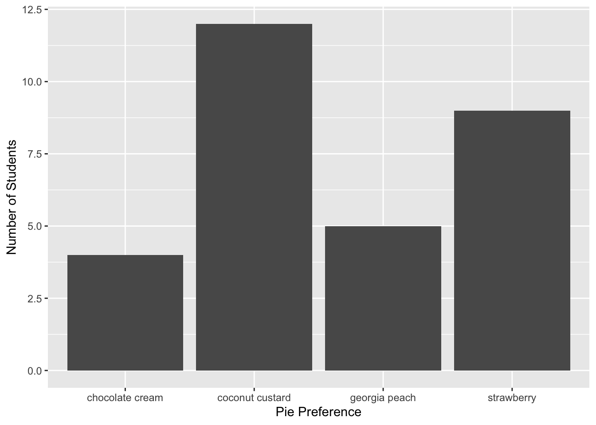
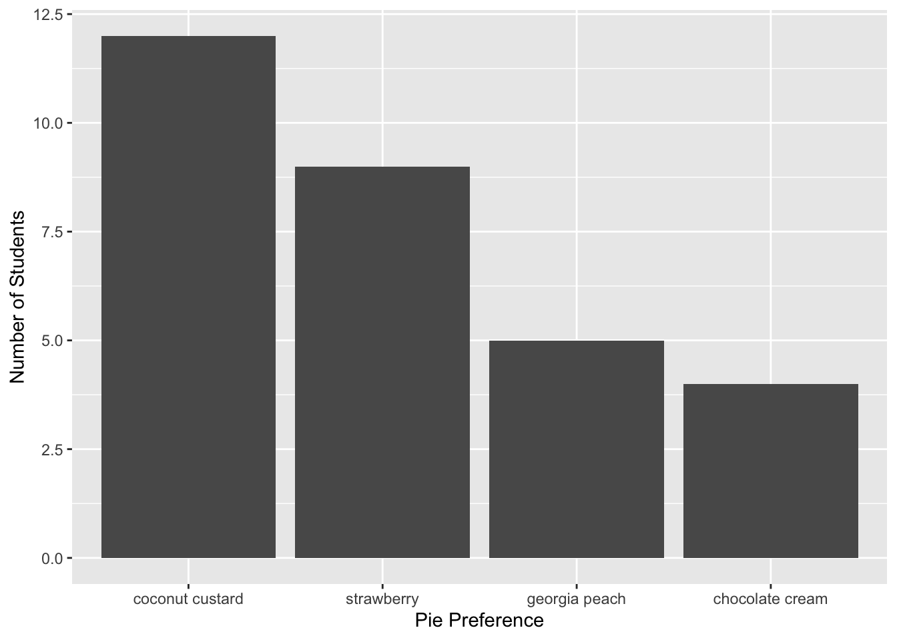
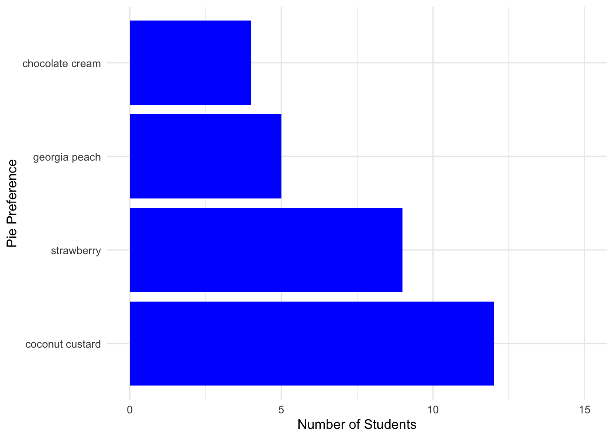

Thursday, September 15, 2022
Today
- Making graphs
Data visualization
Data visualization is a cornerstone of data science. It gives insights into your data that are not accessible by looking at a spreadsheet or data frame of values.
The {ggplot2} package provides functions to make plots efficiently. The functions are an application of the grammar of graphics theory (Leland Wilkinson) of data visualization.
At a basic level, graphics/plots/charts (all interchangeable terms) provide a way to explore the patterns in data; the presence of extreme values, distributions of individual variables, and relationships between groups of variables.
Graphics should emphasize the findings and insights you want your audience to understand. This requires a balance.
On the one hand, you want to highlight as many interesting findings as possible. On the other hand, you don’t want to include so much information that it overwhelms the audience.
The grammar of graphics specifies how a plot translates data to attributes and geometric objects. - Attributes are things like location on along an axes, color, shape, and size. - Geometric objects are things like points, lines, bars, and polygons.
The type of plot depends on the geometric object, which is specified as a function.
Function names for geometric objects begin with geom_. For example, to create a scatter plot of points the geom_point() function is used.
Make the functions from the {ggplot2} package available in your current session.
library(ggplot2)Bar chart
A simple graph is the bar chart showing the number of cases within each group. Consider again the annual hurricane counts.
Import the data from the file on my website and print the first six rows.
loc <- "http://myweb.fsu.edu/jelsner/temp/data/US.txt"
LH.df <- readr::read_table(loc)##
## ── Column specification ────────────────────────────────────────────────────────
## cols(
## Year = col_double(),
## All = col_double(),
## MUS = col_double(),
## G = col_double(),
## FL = col_double(),
## E = col_double()
## )dplyr::glimpse(LH.df)## Rows: 166
## Columns: 6
## $ Year <dbl> 1851, 1852, 1853, 1854, 1855, 1856, 1857, 1858, 1859, 1860, 1861,…
## $ All <dbl> 1, 3, 0, 2, 1, 2, 1, 1, 1, 3, 2, 0, 0, 0, 2, 1, 1, 0, 4, 2, 3, 0,…
## $ MUS <dbl> 1, 1, 0, 1, 1, 1, 0, 0, 0, 1, 0, 0, 0, 0, 0, 0, 0, 0, 0, 0, 0, 0,…
## $ G <dbl> 0, 1, 0, 1, 1, 1, 0, 0, 1, 3, 0, 0, 0, 0, 1, 1, 1, 0, 2, 1, 0, 0,…
## $ FL <dbl> 1, 2, 0, 0, 0, 1, 0, 0, 0, 0, 0, 0, 0, 0, 1, 0, 0, 0, 0, 1, 2, 0,…
## $ E <dbl> 0, 0, 0, 1, 0, 0, 1, 1, 0, 0, 2, 0, 0, 0, 0, 0, 0, 0, 2, 0, 1, 0,…Recall that each case is a year and that the function table() returns the number of years for each landfall count.
table(LH.df$All)##
## 0 1 2 3 4 5 6 7
## 36 50 40 27 6 1 5 1The number of cases for each count is tallied and displayed below the count. There were 36 cases of 0 hurricanes.
The function geom_bar() creates a bar chart of this frequency table.
ggplot(data = LH.df) +
geom_bar(mapping = aes(x = All))
You begin a plot with the function ggplot() that creates a coordinate system that you add layers to. The first argument of ggplot() is the data frame to use in the graph. So ggplot(data = LH.df) creates an empty graph.
You complete the graph by adding one or more layers. The function geom_bar() adds a layer of bars to our plot, which creates a bar chart.
Each geom_ function takes a mapping argument. This defines how variables in our data frame are mapped to visual properties. The mapping argument is always paired with aes() function, and the x argument of aes() specifies which variables to map to the x axes, in this case All. ggplot() looks for the mapped variable in the data argument, in this case, LH.df.
The function geom_bar() tables the counts and then maps the number of cases to bars with the bar height proportional to the number of cases. Here the number of cases is the number of years with that many hurricanes.
The functions are applied in order (ggplot() comes before geom_bar()) and are linked with the addition + symbol. In this way you can think of the functions as layers in a GIS.
The bar chart contains the same information as displayed by the function table(). The y-axis label is ‘count’ and x-axis label is the column name.
Repeat this time using Florida hurricane counts. The annual number of Florida hurricanes by year is given in column FL in the data frame LH.df.
LH.df$FL## [1] 1 2 0 0 0 1 0 0 0 0 0 0 0 0 1 0 0 0 0 1 2 0 2 1 0 1 2 1 0 3 0 2 0 0 0 3 1
## [38] 2 0 0 0 0 1 2 0 3 1 1 1 0 1 0 1 0 0 2 0 0 1 1 1 0 0 0 1 2 1 0 1 0 1 0 0 2
## [75] 1 2 0 2 1 0 0 0 2 2 2 1 0 0 1 0 1 2 0 1 2 1 2 2 1 2 0 0 1 0 0 1 0 0 0 1 0
## [112] 0 0 3 1 2 1 1 0 0 0 1 0 0 1 0 0 0 1 0 0 0 0 0 2 0 1 0 1 0 0 1 0 0 2 0 0 2
## [149] 1 0 0 0 0 4 3 0 0 0 0 0 0 0 0 0 0 1The geom_bar() function tables these numbers and plots the frequency as a bar.
ggplot(data = LH.df) +
geom_bar(mapping = aes(x = FL)) +
xlab("Number of Florida Hurricanes (1851-2016)") +
ylab("Number of Years")
Here axes labels are placed on the plot with the functions ylab() and xlab(). With this type of ‘layering’ it’s easy to go from data on the web to a publishable plot.
Pie preference
Thirty graduate students are surveyed about their favor pie. Categories are (1) chocolate cream, (2) coconut custard, (3) georgia peach, and (4) strawberry. To make a bar chart first create the data as a character vector and then change the vector to a data frame.
pie <- c(rep('chocolate cream', times = 4),
rep('coconut custard', times = 12),
rep('georgia peach', times = 5),
rep('strawberry', times = 9))
piePref.df <- as.data.frame(pie)Use the function str() to see the column type in the data frame.
str(piePref.df)## 'data.frame': 30 obs. of 1 variable:
## $ pie: chr "chocolate cream" "chocolate cream" "chocolate cream" "chocolate cream" ...There is a single column in the data frame with the name pie. It is a factor variable with 4 levels one for each type of pie. A factor is a categorical vector. It looks like a character but it can be ordered. This is important when factors are used in statistical models.
Create a table.
table(piePref.df$pie)##
## chocolate cream coconut custard georgia peach strawberry
## 4 12 5 9Create a bar chart and specify the axis labels.
ggplot(data = piePref.df) +
geom_bar(mapping = aes(x = pie)) +
xlab("Pie Preference") +
ylab("Number of Students")
This is a good start. Improvements should be made.
First, the bar order is alphabetical from left to right. This is the default ordering for character vectors or for factor variables created from character vectors. It is much easier to make comparisons if frequency determines the order.
To change the order on the bar chart specify the order of the factor levels on the vector beer.
pie <- factor(pie,
levels = c("coconut custard", "strawberry", "georgia peach", "chocolate cream"))
piePref.df <- as.data.frame(pie)Or use forcats::fct_infreq() https://forcats.tidyverse.org/reference/fct_inorder.html
Now remake the bar chart.
ggplot(data = piePref.df) +
geom_bar(mapping = aes(pie)) +
xlab("Pie Preference") +
ylab("Number of Students")
Second, the vertical axis tic labels are fractions. Since the bar heights are counts (integers) the tic labels also should be integers.
To override this default you add a new y-axis layer. The layer is the function scale_y_continuous() where you indicate the lower and upper limits of the axis with the concatenate (limits = c()) function. Now remake the bar chart.
ggplot(data = piePref.df) +
geom_bar(mapping = aes(pie)) +
xlab("Beer Preference") +
ylab("Number of Students") +
scale_y_continuous(limits = c(0, 15))
Now the chart is publishable. Options exist for changing the look of the plot for digital media include, colors, orientation, background, etc.
For example to change the bar color use the fill = argument in the function geom_bar(). To change the orientation of the bars use the layer function coord_flip, and to change the background use the layer function theme_minimal(). You make changes to the look of the plot with additional layers.
ggplot(data = piePref.df) +
geom_bar(mapping = aes(x = pie), fill = "blue") +
xlab("Pie Preference") +
ylab("Number of Students") +
scale_y_continuous(limits = c(0, 15)) +
coord_flip() +
theme_minimal()
Recall: the fill = is used on the variable named in the aes() function but it is specified outside the aes() function.
Available colors include
colors()In the above example you manually reordered the levels in the factor vector pie according to preference. Let’s see how to do this automatically.
Consider storm intensity of tropical cyclones during 2017. First create two vectors one numeric containing the minimum pressures (millibars) and the other character containing the storm names.
minP <- c(990, 1007, 992, 1007, 1005, 981, 967, 938, 914, 938, 972, 971)
name <- c("Arlene", "Bret", "Cindy", "Don", "Emily", "Franklin", "Gert",
"Harvey", "Irma", "Jose", "Katia", "Lee")The function reorder() takes a character vector as the first argument and returns an ordered factor with the order dictated by the numeric values in the second argument.
reorder(name, minP)## [1] Arlene Bret Cindy Don Emily Franklin Gert Harvey
## [9] Irma Jose Katia Lee
## attr(,"scores")
## Arlene Bret Cindy Don Emily Franklin Gert Harvey
## 990 1007 992 1007 1005 981 967 938
## Irma Jose Katia Lee
## 914 938 972 971
## 12 Levels: Irma Harvey Jose Gert Lee Katia Franklin Arlene Cindy Emily ... DonThe vector name is in alphabetically order but the factor levels indicate the order of storms from lowest pressure (Irma) to highest pressure (Don).
Using the mutate() function you can add a column to a data frame where the column is an ordered factor.
Note that it is the difference in pressure (deltaP for short) between the air outside the tropical cyclone and the air in the center that causes the winds. Cyclones with a large pressure difference are stronger in terms of their wind speed.
Typically the air outside is about 1014 mb so you compute deltaP and then reorder the tropical cyclone names using this computed variable.
df <- data.frame(name, minP) |>
dplyr::mutate(deltaP = 1014 - minP,
nameOrderedFactor = reorder(name, deltaP))Finally you plot the bar chart. Since there is no tabulation of the values you use geom_col() instead of geom_bar().
ggplot(data = df) +
geom_col(mapping = aes(x = nameOrderedFactor, y = deltaP)) +
ylab("Pressure Difference [mb]") +
xlab("Atlantic Tropical Cyclones of 2017") +
coord_flip()Note: geom_bar() plots a bar chart AFTER tabulating a column. geom_col() plots a bar chart on a pre-tabulated column.
Let’s return to the weather data from Tallahassee.
df <- readr::read_csv(file = "data/TLH_SOD1892.csv") |>
dplyr::filter(STATION == "USW00093805") |>
dplyr::mutate(Year = lubridate::year(DATE),
Month = lubridate::month(DATE)) |>
dplyr::filter(Year >= 1980 & Month == 9) |>
dplyr::group_by(Year) |>
dplyr::summarize(TotalPrecip = sum(PRCP)) |>
dplyr::mutate(Year = reorder(as.factor(Year), TotalPrecip))## Rows: 47056 Columns: 13
## ── Column specification ────────────────────────────────────────────────────────
## Delimiter: ","
## chr (2): STATION, NAME
## dbl (10): LATITUDE, LONGITUDE, ELEVATION, PRCP, TAVG, TMAX, TMIN, WDF1, WSF...
## date (1): DATE
##
## ℹ Use `spec()` to retrieve the full column specification for this data.
## ℹ Specify the column types or set `show_col_types = FALSE` to quiet this message.ggplot(data = df) +
geom_col(mapping = aes(x = Year, y = TotalPrecip)) +
ylab("September Rainfall [in]") +
coord_flip()Histogram
The histogram is similar to the bar chart except it uses bars to indicate frequency (or proportion) over an interval of continuous values. For instance, with continuous values the function table() is not useful.
x <- rnorm(n = 10)
table(x)## x
## -1.6032276455739 -1.21105005355005 -0.930597500697453 -0.659731635004227
## 1 1 1 1
## -0.638249710440162 -0.499239870677882 -0.0277773938058075 0.277103773302114
## 1 1 1 1
## 0.526728668221472 0.545780025214686
## 1 1So neither is a bar plot.
A histogram is made as follows: First a collection of disjoint intervals, called bins, covering the range of data points is chosen. “Disjoint” means no overlap, so the intervals look like (a,b] or [a,b). The interval (a,b] means the interval contains all the values from a to b including b but not a, whereas the interval [a,b) means the interval contains all the values from a to b including a but not b.]. Greater than 3.98 (indicated by () and less than or equal to 8.2 (indicated by ]). And so on.
You include these cuts as a ordered factor variable to the original cars data frame.
cars <- cars |>
dplyr::mutate(x_bins = cut(speed, breaks = 5))You then map the x_bins variable to the x aesthetic and draw box plots.
ggplot(data = cars,
mapping = aes(x = x_bins, y = dist)) +
geom_boxplot() +
xlab("Speed (mph)") + ylab("Breaking distance (ft)")By binning the explanatory variable you create sub-samples of the data. A sample of response values within a given interval of the explanatory variable. The number of intervals is the number of breaks specified by the cut() function.
Here you see evidence against the assumption of linearity. Further you see that the box size is increasing. That is the IQR range of breaking distance (depth of the box) is larger for faster moving cars. This creates doubt that the assumption of constant variance is valid.
What about the assumption of normality? Although the normality assumption about the residuals is that the conditional distribution of the residuals at each \(x_i\) is adequately described by a normal distribution, in practice the residuals are examined together. The residuals are obtained by using the resid() function.
res <- resid(model1)
res## 1 2 3 4 5 6 7
## 3.849460 11.849460 -5.947766 12.052234 2.119825 -7.812584 -3.744993
## 8 9 10 11 12 13 14
## 4.255007 12.255007 -8.677401 2.322599 -15.609810 -9.609810 -5.609810
## 15 16 17 18 19 20 21
## -1.609810 -7.542219 0.457781 0.457781 12.457781 -11.474628 -1.474628
## 22 23 24 25 26 27 28
## 22.525372 42.525372 -21.407036 -15.407036 12.592964 -13.339445 -5.339445
## 29 30 31 32 33 34 35
## -17.271854 -9.271854 0.728146 -11.204263 2.795737 22.795737 30.795737
## 36 37 38 39 40 41 42
## -21.136672 -11.136672 10.863328 -29.069080 -13.069080 -9.069080 -5.069080
## 43 44 45 46 47 48 49
## 2.930920 -2.933898 -18.866307 -6.798715 15.201285 16.201285 43.201285
## 50
## 4.268876There are other extractor functions (like coef()) that output information from the model as vectors or matrices.
The fortify() function from the {ggplot2} package makes a data frame from the model object using several extractor functions.
model.df <- fortify(model1)
head(model.df)## dist speed .hat .sigma .cooksd .fitted .resid .stdresid
## 1 2 4 0.11486131 15.53088 0.0045923121 -1.849460 3.849460 0.2660415
## 2 10 4 0.11486131 15.43338 0.0435139907 -1.849460 11.849460 0.8189327
## 3 4 7 0.07150365 15.51624 0.0062023503 9.947766 -5.947766 -0.4013462
## 4 22 7 0.07150365 15.43489 0.0254673384 9.947766 12.052234 0.8132663
## 5 16 8 0.05997080 15.53907 0.0006446705 13.880175 2.119825 0.1421624
## 6 10 9 0.04989781 15.49830 0.0071319931 17.812584 -7.812584 -0.5211526The data frame resulting from the fortify() function has a column labeled .resid containing the vector of residuals. The residuals are the observed distance minus the predicted (fitted) distance (dist column minus .fitted column).
Create a histogram and density of the model’s residuals by typing
ggplot(data = model.df,
mapping = aes(.resid)) +
geom_histogram(bins = 8, color = "white") +
geom_freqpoly(bins = 8)You can see that the histogram is not symmetric. There are more values to the right of the central set of values than to the left. The validity of the normality assumption is therefore under question.
Since departures from normality can occur simply because of sampling variation, the question arises as to whether that apparent skewness (asymmetry) you see in this set of residuals is significantly larger than expected by chance.
One approach to visualizing the expected variation from a reference distribution is to add an uncertainty band on the density plot.
The sm.density() function from the {sm} package provides a way to plot the uncertainty band. The first argument is a vector of residuals and the argument model = "Normal" draws a band around a normal distribution centered on zero with a variance equal to the variance of the residuals.
sm::sm.density(res, model = "Normal")The black curve representing the residuals is shifted left relative to a normal density and goes outside the blue ribbon in the right tail indicating that the residuals may not be adequately described by a normal distribution although deviation from normality is small.
The blue ribbon is the uncertainty surrounding a normal density curve.
In summary, the linear regression model may not be adequate. The assumptions of linearity, equal variance, and normally distributed residuals are not entirely reasonable for these data.
What should you do? The relationship appears to be non-linear. So you use the square root of the breaking distance as the response variable instead.
ggplot(data = cars,
mapping = aes(x = speed, y = sqrt(dist))) +
geom_point() +
geom_smooth(method = lm, se = FALSE) +
xlab("Speed (mph)") +
ylab(expression(sqrt("Break Distance (ft)")))## `geom_smooth()` using formula 'y ~ x'Fit another model. First make a copy of the original data frame and add a column called distSR. Check the assumption of linearity.
cars2 <- cars
cars2$distSR <- sqrt(cars$dist)
ggplot(data = cars2,
mapping = aes(x = cut(speed, breaks = 5), y = distSR)) +
geom_boxplot() +
xlab("Speed (mph)") +
ylab("Square Root of Break Distance (ft)")It looks good.
Fit the new model and extract and make a histogram of the residuals.
model2 <- lm(distSR ~ speed, data = cars2)
res2 <- resid(model2)
model2.df = fortify(model2)
ggplot(data = model2.df,
mapping = aes(.resid)) +
geom_histogram(bins = 8, color = "white") +
geom_freqpoly(bins = 8)Distribution of residuals is still skewed but it is better. In fact now the black line is completely inside the uncertainty ribbon of a normal density plot.
sm::sm.density(res2, model = "Normal")
Transforming the response variable
The cars example uses a square-root transformation of the response variable. This is appropriate when the response variable has a physical connection to the explanatory variable (e.g., timber volume as a response variable to tree diameter at breast height).
Limitations
- Cannot be applied to negative numbers
- Transforms numbers < 1 and > 1 in different ways
A more common situation is to take logarithms (natural or common) of the response variable.
Appropriate
- When the SD of the residuals is directly proportional to the fitted values (and not to some power of the fitted values)
- When the relationship is close to exponential
Limitations
- How to transform zero values? Add a constant such as 1 or 0.00001 or remove zero values from analysis (not recommended)
Family of transformations
- Box-Cox (Power) Transformation
- More about this later
If your response variable is counts (e.g., the number of hurricanes in a season) then it is better to use a generalized linear regression model than to transform the counts to normality.